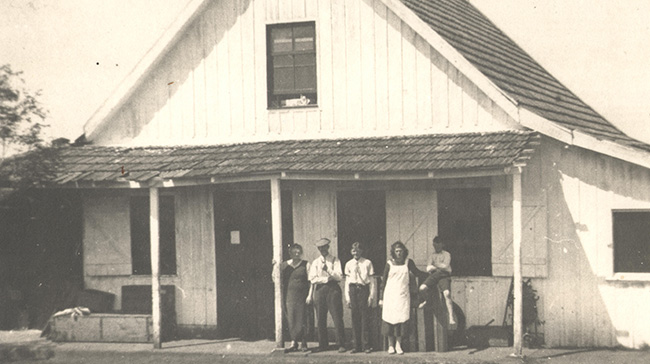
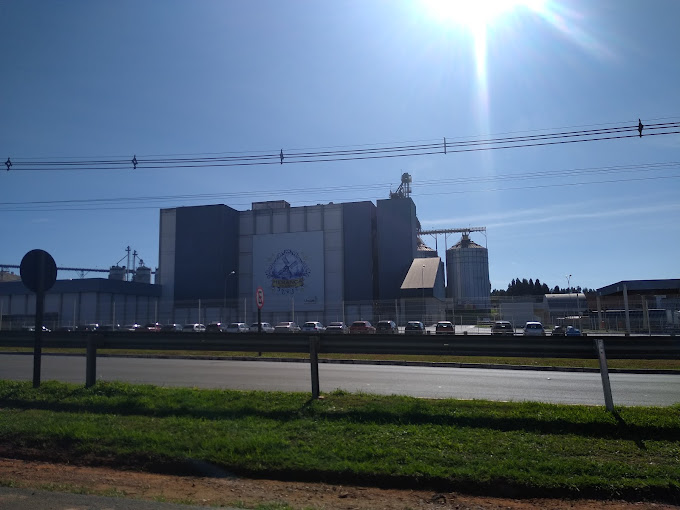

A Frísia foi fundada em 1925 por imigrantes holandeses na região de Carambeí, próxima a Ponta Grossa, como uma cooperativa focada na produção leiteira. Com o nome original de Cooperativa Mista de Carambeí, a empresa foi crucial para o desenvolvimento agrícola da região, com um forte foco na produção de laticínios e derivados.
A escolha de Carambeí e Ponta Grossa como sede foi estratégica, devido às condições favoráveis para a pecuária e a proximidade de importantes vias de transporte. A cooperativa foi crescendo e expandindo suas operações, sempre ligada à produção sustentável e à gestão eficiente dos recursos.
Além do leite, a Frísia se destacou também pela criação de gado e, mais tarde, pela diversificação em novas áreas da agroindústria. O compromisso com a qualidade e o bem-estar dos cooperados sempre esteve no centro das operações da empresa.
Em 2024, a Frísia é uma das maiores cooperativas agroindustriais do Brasil. Com sede em Ponta Grossa e atividades espalhadas por várias regiões, a cooperativa continua a ser referência em laticínios, mas também se expandiu para outros setores, como a produção de grãos e insumos agrícolas.
A Frísia se destaca hoje por seu compromisso com a inovação e a sustentabilidade. A empresa implementou tecnologias avançadas para aumentar a eficiência e reduzir o impacto ambiental, incluindo o uso de energia renovável e o manejo responsável de resíduos. Essas práticas a tornaram um exemplo no agronegócio brasileiro.
Além disso, a Frísia continua a investir na comunidade local, promovendo iniciativas de educação, treinamento e desenvolvimento sustentável para seus cooperados e colaboradores. A empresa se mantém firme em seu propósito de contribuir com a economia regional, enquanto se alinha com as metas globais de sustentabilidade e inovação no agronegócio.